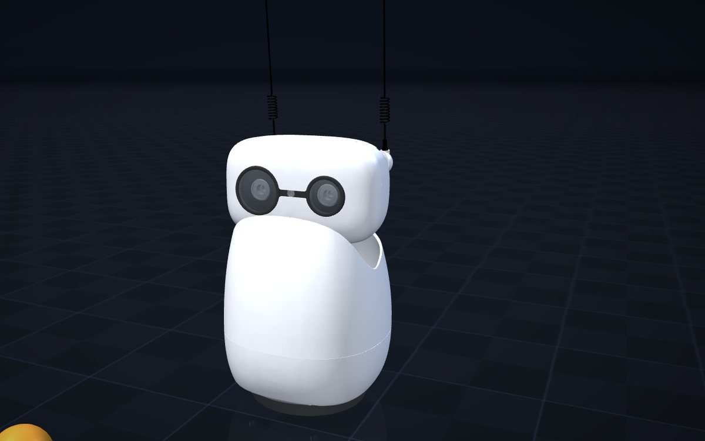

All projects
2-DOF Shoulder Design for Reachy Mini
Design study adding Olaf-style shoulders to the open-source Reachy Mini: a spherical five-bar linkage on two XL330 servos per side, synthesised in Python and exported as parametric STEP parts with ±50° swing and 111° elevation.
2026
Design study
Fusion 360
build123d

When
Jul 2026
Type
Mechanism design study
Actuators
2 × Dynamixel XL330 per side
Status
CAD complete; prototype next
Reachy Mini is Pollen Robotics and Hugging Face's open-source desktop robot. Inspired by the shoulder mechanism of Disney's Olaf robot (arXiv 2512.16705), I redesigned its upper body shell so each side gets a two-degree-of-freedom shoulder driven by two small XL330 servos — enough for expressive arm gestures within the original footprint.
Results
±50°
swing, with 79.4° pitch
111°
elevation (102° fore-aft)
0.0000 mm
pin error over 418 checked poses
2.5
static safety factor
Highlights
- Synthesised a spherical five-bar linkage in Python / NumPy, with a 0.65–1.98 transmission ratio across the workspace.
- Generated parametric STEP parts with build123d / OpenCASCADE — links, arms (11.2 g), clamps and fairings — with ≥ 0.5 mm clearance to the rest of the robot and a verified servo-bracket fit.
- Automated CAD: loaded the Reachy Mini URDF into Fusion 360 by computing forward kinematics (161 / 161 parts placed), converted 41 STL meshes to STEP, and repaired the Fusion MCP connection.
- Next: refine the fairing so it reads as part of the body, then print and test a prototype.
Skills & Technologies
- Fusion 360
- build123d / OpenCASCADE
- Python / NumPy
- Linkage Synthesis
- URDF
- Dynamixel XL330
- 3D-Printable Design